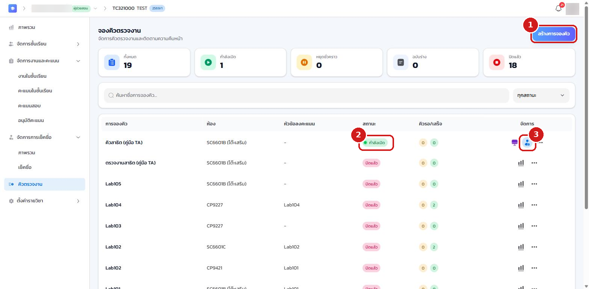
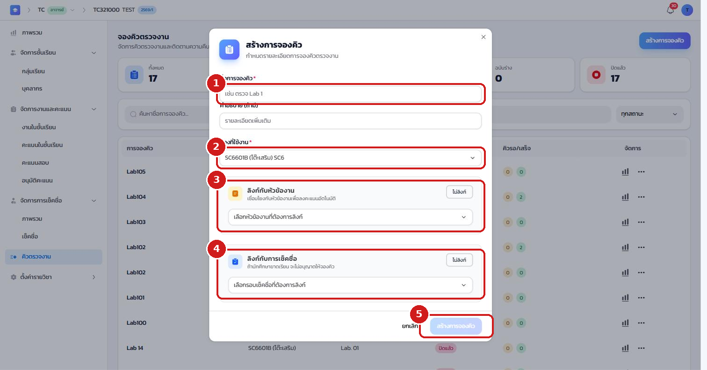
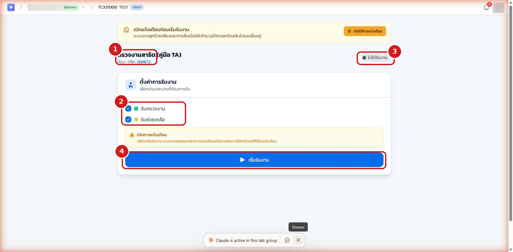
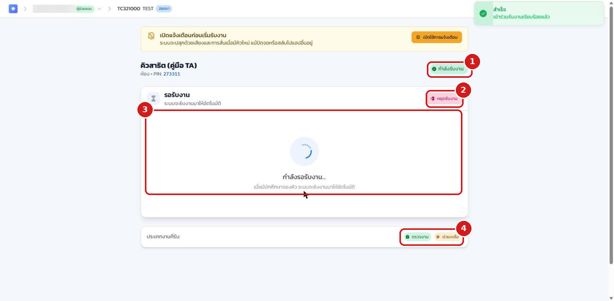

16.1 ภาพรวม#
ระบบคิวช่วยจัดลำดับการตรวจงานและการขอคำปรึกษาในห้องปฏิบัติการให้เป็นระเบียบและยุติธรรม นักศึกษาจองคิวผ่าน QR / PIN / โต๊ะ ส่วนผู้ช่วยสอนจะเข้า หน้ารับงาน (Worker) เพื่อรับและตรวจงานตามลำดับ บทนี้อธิบายตั้งแต่การเปิดรอบคิว การเข้าหน้ารับงาน ไปจนถึงการรับและตรวจงานจริง
16.2 เปิดรอบคิว#
หากได้รับสิทธิ์จัดการคิว ผู้ช่วยสอนสามารถเปิดรอบคิวได้เอง
- เข้าเมนู คิวตรวจงาน แล้วคลิกปุ่ม สร้างการจองคิว เพื่อสร้างรอบใหม่
- เมื่อรอบคิวถูกสร้าง (สถานะ "ฉบับร่าง") ให้กดปุ่ม เริ่ม (▶) ท้ายแถวเพื่อเปิดรอบ สถานะจะเปลี่ยนเป็น กำลังเปิด
- เมื่อรอบ กำลังเปิด แล้ว ท้ายแถวจะมีไอคอน ผู้ตรวจ สำหรับเข้าหน้ารับงาน คลิกไอคอนนี้เพื่อเริ่มทำงาน

เมื่อกด สร้างการจองคิว ระบบจะเปิดหน้าต่างให้กำหนดรายละเอียด ได้แก่ ชื่อคิว ห้องที่ใช้งาน และตัวเลือกเชื่อมโยงกับหัวข้องาน (เพื่อลงคะแนนอัตโนมัติ) หรือเชื่อมโยงกับการเช็คชื่อ (เพื่อจำกัดเฉพาะผู้เข้าเรียน)

16.3 ตั้งค่าและเริ่มรับงาน#
เมื่อคลิกไอคอนผู้ตรวจ ระบบจะเปิด หน้ารับงาน ในแท็บใหม่ ก่อนเริ่มทำงานให้ตั้งค่าดังนี้
- ส่วนหัวแสดงชื่อรอบคิว ห้อง และ PIN ของรอบนั้น
- เลือก ประเภทงานที่ต้องการรับ ได้แก่ รับตรวจงาน และ/หรือ รับช่วยเหลือ
- ป้ายสถานะด้านขวาบนแสดงสถานะปัจจุบัน (เริ่มต้นเป็น ไม่ได้รับงาน)
- คลิกปุ่ม เริ่มรับงาน เพื่อเริ่มรับคิว (ระบบอาจขออนุญาตส่งการแจ้งเตือน เพื่อปลุกด้วยเสียง/การสั่นเมื่อมีคิวใหม่ แม้สลับไปแอปอื่น — แนะนำให้กดอนุญาต)

16.4 ระหว่างรับงาน#
เมื่อกด เริ่มรับงาน แล้ว หน้าจอจะเปลี่ยนเป็นโหมดทำงาน
- ป้ายสถานะเปลี่ยนเป็น กำลังรับงาน
- ปุ่ม หยุดรับงาน ใช้หยุดรับคิวชั่วคราวเมื่อต้องพัก
- ส่วน รอรับงาน จะแสดงสถานะรอ เมื่อมีนักศึกษาจองคิว ระบบจะ ยิงงานมาให้อัตโนมัติ และแสดงงานปัจจุบันที่ต้องตรวจพร้อมข้อมูลนักศึกษาและโต๊ะ
- ส่วนล่างแสดง ประเภทงานที่รับ ที่ท่านเลือกไว้

เมื่อระบบเสนองานให้ ผู้ช่วยสอนสามารถ
- กด เสร็จสิ้น (complete) เมื่อตรวจงานเสร็จ ระบบจะบันทึกผลและเรียกคิวถัดไป
- กด ข้าม (skip) หากยังไม่พร้อมตรวจรายนั้น เพื่อส่งต่อให้ผู้ตรวจคนอื่น
- ระบบมีกลไก เสนองาน–หมดเวลา–ปฏิเสธ เพื่อกระจายงานอย่างเป็นธรรม หากไม่ตอบรับภายในเวลาที่กำหนด คิวจะถูกส่งต่อโดยอัตโนมัติ
เมื่อพักหรือเลิกงาน ให้กด หยุดรับงาน เพื่อไม่ให้ระบบเสนอคิวมาให้ขณะที่ท่านไม่พร้อม สถานะจะกลับเป็น "ไม่ได้รับงาน" และเมื่อสิ้นสุดคาบ ผู้มีสิทธิ์จัดการคิวควรกด หยุดรับคิว ที่หน้ารายการคิวเพื่อปิดรอบ